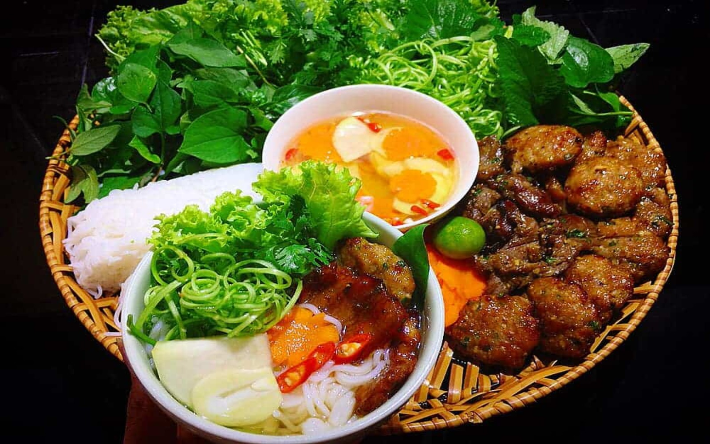

Bún chả

Bún chả Hà Nội là một trong những món ăn đặc trưng, thơm ngon và được biết đến khắp thế giới. Các bạn dù ở gần xa, khi đến thăm Hà Nội nhất định phải thử món bún nổi tiếng này được chế biến bởi người bản địa!
Quay lại Thực đơn